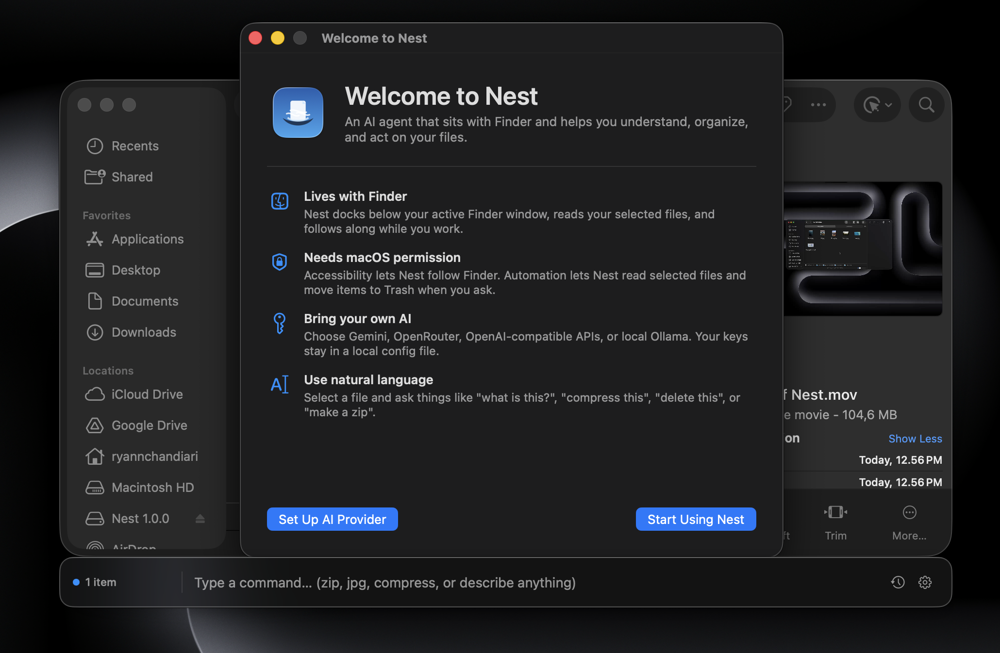
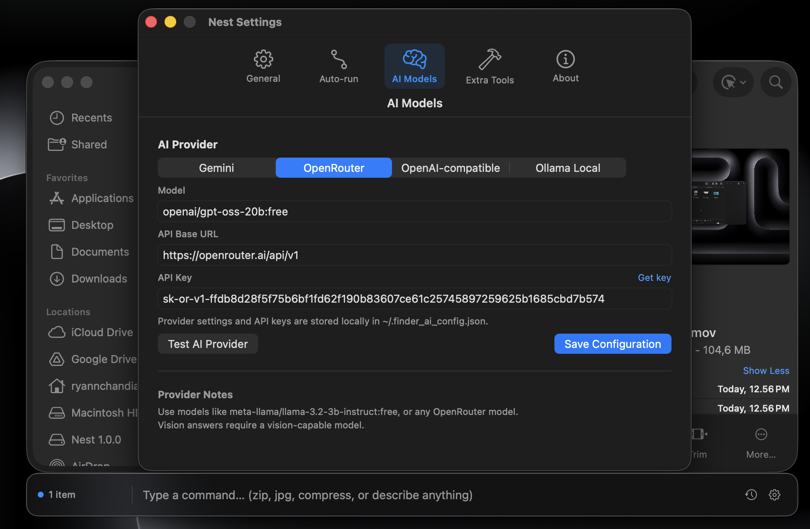
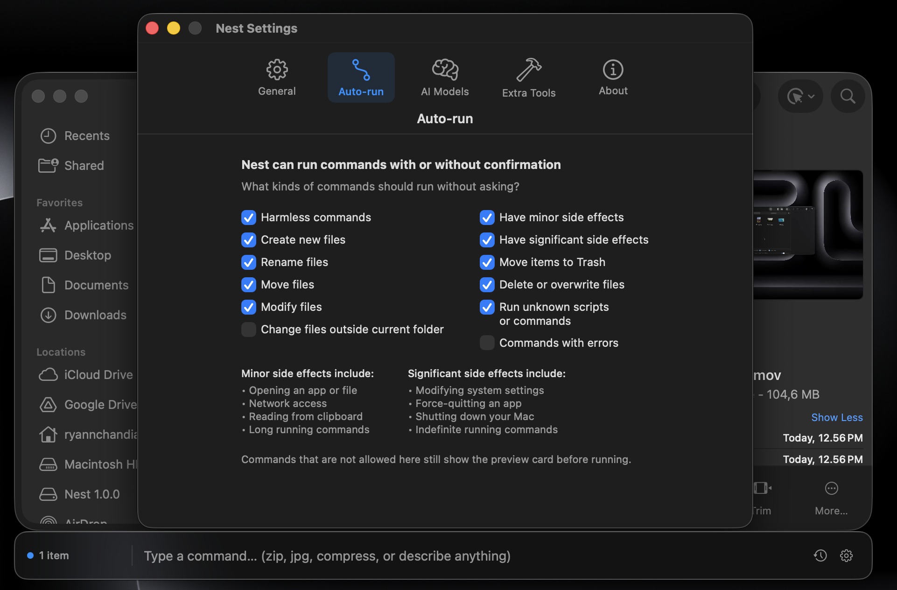
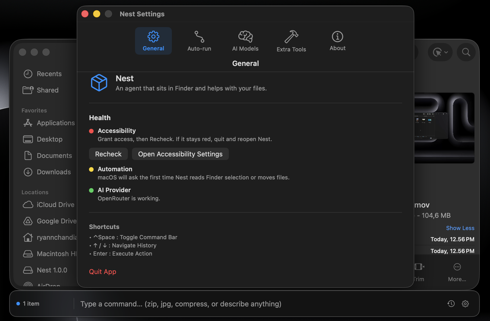
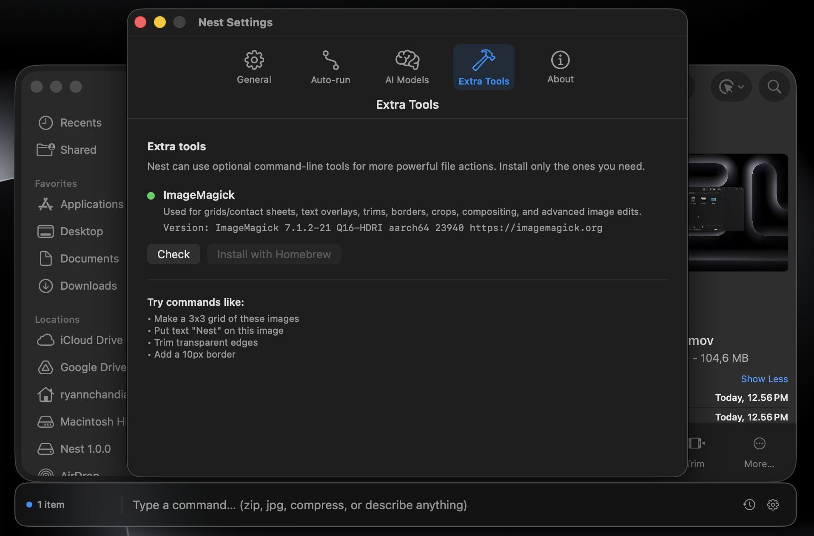

A Finder-native AI companion for macOS.
Nest is a native macOS AI agent that lives directly inside Finder. Instead of copying files into a browser or switching tools, you select files or folders in Finder, type what you want, and Nest turns that intent into useful local actions.
The app docks beneath the active Finder window, reads the current selection, talks to your chosen AI provider, and presents safe commands or direct answers in a lightweight interface that feels part of the desktop.
Command bar, previews, answers, and activity in one flow.
Finder-native command bar
Tracks the active Finder window and keeps the input surface docked where the file context already lives.
Bring your own AI
Supports Gemini, OpenRouter, OpenAI-compatible APIs, and Ollama for local/offline workflows.
Safe command previews
Harmless tasks can run quickly, while risky or destructive operations require an explicit preview and approval.
Activity and onboarding
Settings, first-run onboarding, permission checks, and activity logs make the app easier to trust and revisit.
Built around real desktop context.




Translating plain language into local file actions.
The core challenge was making a desktop AI tool feel safe enough to use on real files. I built the app around Finder state, provider configuration, command translation, command preview windows, answer cards, instant actions, and an auto-run policy that separates harmless commands from operations that need approval.
Nest also integrates optional command-line tools like ImageMagick, FFmpeg, Pandoc, Poppler, and QPDF without installing anything behind the user’s back. If a tool is missing, the app explains what is needed and lets the user stay in control.
Designing trust into a powerful tool.
This project pushed me to think beyond “can the AI do it?” and into “should the app run this, preview this, or explain this?” The most important part of Nest is the boundary between natural-language convenience and local-file safety.
Building it helped me sharpen native macOS development, AppKit window behavior, permission flows, provider integrations, and the product design of AI tools that act on a user’s real environment.